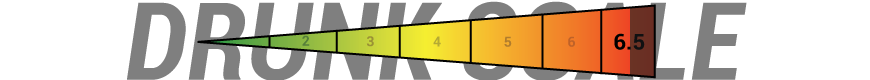

The Matrix Trilogy.
Universal Rules
These rules apply to all three movies.| Take a Drink When: | |
|---|---|
| 1. | You see a computer monitor. |
| 2. | Anyone uses a phone. |
| 3. | Someone says the name of a ship. |
| Take 2 Drinks When: | |
| 4. | Someone has the Matrix jack inserted into or removed from their head. |
The Matrix
| Take a Drink When: | |
|---|---|
| 1. | Someone runs / sprints. |
| Take 2 Drinks When: | |
| 2. | Someone says Mr. Anderson. |
| 3. | A person turns into an agent. |
| Finish Your Drink When: | |
| 4. | Morpheus or Neo does the famous come-and-get-it hand gesture. |
| 5. | Neo finally goes into bullet-time. |
| And If You're Not a Baby, Drink Everytime: | |
| 6. | Someone mentions The Matrix. |
The Matrix Reloaded
| Take a Drink When: | |
|---|---|
| 1. | Someone says "Oracle" or "Keymaker". |
| 2. | For every slow motion part of the first Smith fight scene. |
| 3. | For every vehicle that's destroyed during the highway chase. |
| Take 2 Drinks When: | |
| 4. | Love is emphasized. |
| 5. | Neo has a dream. |
| 6. | Smith and Neo meet for the first time. |
| 7. | For every person Neo destroys during the medieval weapons fight scene. |
| Chug For 5 Seconds When: | |
| 8. | For the end of Morpheus' speech. |
| 9. | Seriph is a boss. |
| 10. | The blonde cums at the restaurant table. |
| Finish Your Drink When: | |
| 11. | The ghost twin guys' demise. |
| 12. | Neo catches Trinity. |
The Matrix Revolutions
| Take a Drink When: | |
|---|---|
| 2. | Someone says the word "machine(s)". |
| 3. | Agent Smith or Neo smash into/through something. |
| Take 2 Drinks When: | |
| 4. | Someone refers to the amount of time they have until the machines reach Zion. |
| 5. | Niobe is a badass. |
| Chug For 5 Seconds When: | |
| 6. | In honor of Seriph and the Oracle. |
| 7. | Neo's eyes are fried. |
| 8. | They EMP the dock. |
| 9. | In honor of Trinity. |
| Finish Your Drink When: | |
| 10. | The machines break through. |
| 11. | Agent Smith asks if it's over. |
| And If You're Not a Baby, Drink Everytime: | |
| 12. | Drink every time someone says Zion. |